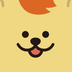

I build scalable
backend systems.
안정적인 분산 아키텍처와 트래픽 최적화를 깊이 고민하며, 비즈니스 성장을 견인할 수 있는 견고한 백엔드 인프라를 개발합니다.

Abraham Yoo
Back-End & Infrastructure Engineer
시스템 자원의 안정적인 관리와 복잡도가 낮은 깨끗한 설계를 가장 가치있게 생각합니다. Nginx를 활용한 로드 밸런싱, Docker 컨테이너 오케스트레이션, 인메모리 캐시를 이용한 쿼리 단축, 그리고 자동화 스크립팅 기반의 무중단 배포 환경을 만들어가고 있습니다.
Clean Code
Zero Downtime
Automation
Overview
Location
Seoul, South Korea
Specialty
Express / Python / DevOps
Status
Active & Open to Offers
Tech Stack
Node.js
Express
Python
PostgreSQL
MySQL
Redis
Docker
Nginx
Linux
Git
Core Engineering Strengths
안정적인 분산 데이터베이스 설계
PostgreSQL 및 MySQL RDBMS 환경에 최적화된 스키마 설계와 인프라 튜닝을 지향하며, 서비스 확장 시 병목이 되는 조리 속도 개선을 우선순위로 삼습니다.
배포 및 프로세스 자동화
Docker 빌드 최적화 및 Linux 쉘 스크립트 기반 배포 기법을 수립하여 human error를 사전에 방지하고 일관된 운영 환경을 제공합니다.